4．伽罗瓦的可解性理论
在阿贝尔的工作之后，情况是这样：虽然高于四次的一般方程不能用根式求解，但仍有很多特殊的方程，如二项方程xp＝a（p为素数）和阿贝尔方程都可用根式求解。现在的任务是确定哪些方程可用根式求解。刚刚由阿贝尔开始的这个任务由伽罗瓦（1811—1832）担当起来了。由于出身富裕并有受过教育的双亲，他在15岁时就进入巴黎的一所有名的公立中学，并开始研究数学。这个学科成了他的爱好，他仔细研究了拉格朗日、高斯、柯西和阿贝尔的著作，别的学科他都忽视了。伽罗瓦曾想进多科工艺学校，但可能由于在考场上口头回答问题失误，或考试的教授不了解他，两次尝试都遭落选，因此他进了预备学校（这个名字是对正规学校讲的，那时是一所低等的学校）。1830年革命时，革命把查理十世（Charles X）从王位上赶走，而任命了路易·菲利普（Louis Philippe）。伽罗瓦公开批评他那所学校的学监对革命不支持而被开除。他两次因为政治罪而被捕，在狱中度过了他的半生和最后一年的大部分时间，并在1832年5月31日的一次决斗中被杀了。
在学校的第一年，伽罗瓦发表了四篇文章。1829年，他把解方程的两篇文章呈送科学院。这些文章被托给了柯西，他把它们遗失了。1830年1月，他交给科学院另外一篇仔细写成的关于他的研究的文章。该文送到傅里叶那里，之后不久傅里叶就死了，因而这篇文章也被遗失了。在泊松提议下，伽罗瓦就他的研究写了（1831）一篇新文章《关于用根式解方程的可解性条件》（Sur les conditions de résolubilitédes équations par radicaux）(8)。这篇文章是他在方程的解的理论方面仅有的一篇完成了的文章，被泊松作为难以理解而退回，并劝告他应写一份较详尽的阐述。在伽罗瓦死的前夜，他为他的研究起草了一份匆忙写成的说明，托给了他的朋友舍瓦利埃（August Chevalier）。这个说明被保存下来了。
1846年，刘维尔在《数学杂志》(9)上编辑出版了伽罗瓦的部分文章，其中包括1831年文章的一个修订。后来塞雷特的1866年的《高等代数教程》（Cours d'algèbre supérieure）第三版对伽罗瓦的思想作了一个叙述。对伽罗瓦理论第一个全面而清楚的介绍是若尔当（Camille Jordan）于1870年在他的书《置换和代数方程专论》（Traité des substitutions et des équations algébriques）中给出的。
伽罗瓦是通过改进拉格朗日的思想去探讨可用根式求解的方程的特性问题的，虽然他也从勒让德、高斯、阿贝尔的著作中得到一些启发。他提出考虑一般方程，这当然就是
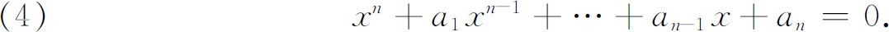
同拉格朗日的著作中一样，其中的系数必须是独立的或完全任意的。他还提出考虑特殊的方程，如
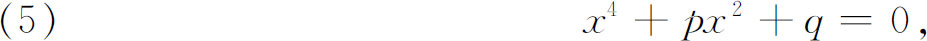
其中仅有两个系数是独立的。伽罗瓦的主要思想是要绕开构造这给定多项式的拉格朗日预解式（第25章第2节），这种构造需要很高的技巧并且没有明确的成套方法。
和拉格朗日一样，伽罗瓦用了根的置换或排列的概念。例如，设x1，x2，x3，x4是一个四次方程的四个根，则在包含这些xi的任何表达式中交换x1和x2就是一个置换，这个特别的置换用
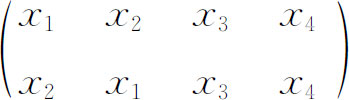
来表示，另一个置换由
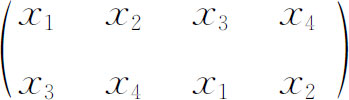
表示。实行第一个置换后进行第二个置换，等价于实行第三个置换
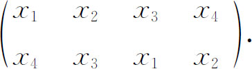
因为，例如由第一个置换，x1换成x2；由第二个置换，x2又换成x4；而由第三个置换，x1直接就变到x4。我们就说头两个置换按上述顺序作成的乘积就是第三个置换。总共有4！个可能的置换。因为置换集合中任何两个置换的乘积仍是原集合的成员，所以置换的集合就说是形成一个群。这个概念，当然还不是抽象群的正式定义，它是属于伽罗瓦的。
为了掌握伽罗瓦的思想，让我们考虑方程(10)
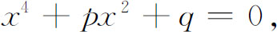
这里p和q是独立的。令R是由p和q的有理表达式所形成的域，这些表达式的系数在有理数域中，一个典型的表达式是
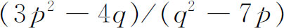
。按伽罗瓦的说法，R是由添加字母或未知数p，q到有理数中而得到的域。这个域R是给定方程的系数域或有理整环，这个方程就说是属于这个域R。和阿贝尔一样，伽罗瓦没有用域或有理整环这术语，但他确实用了这概念。我们恰好知道这四次方程的根是
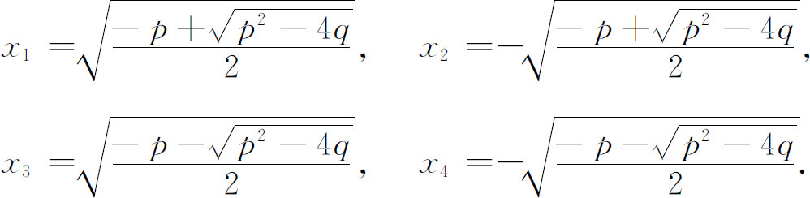
于是，系数在R中的两个关系
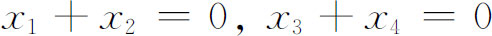
对这些根成立。由于我们的方程是四次的，因而有根的24个可能置换。下面八个置换
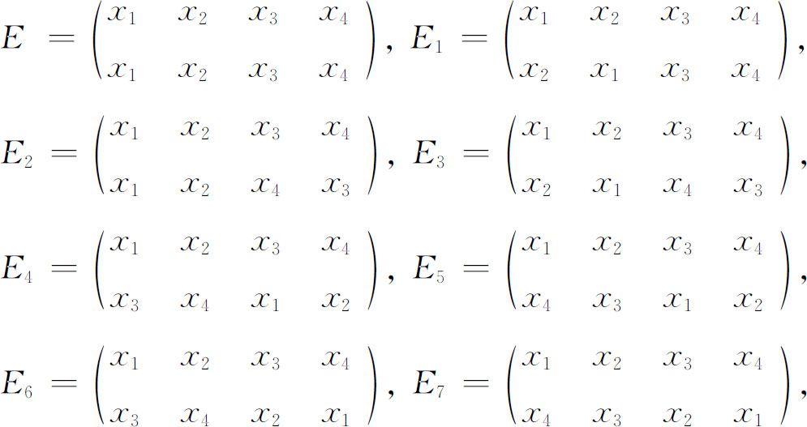
使在R中这两个关系保持成立(11)。可以证明，这八个置换是24个置换中使根之间在R中的全部关系都不变的仅有的置换。这八个置换便是这方程在R中的群。他们是整个群的一个子群。就是说，一个方程相对于域R的群是根的置换的群或子群，这些置换使给定方程（不管一般或特殊的）的根之间带有R中的系数的全部关系不变。我们能说，使R中全部关系不变的置换的数目是我们对根的无知程度的一个尺度，因为在这八个置换之下我们不能把它们区分开来。
现在考虑
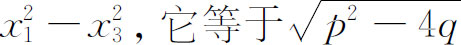
。添加这个根式到R中，形成一个域R′，即我们形成包含R和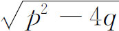
的最小的域。于是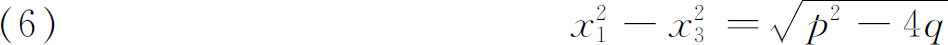
是R′中的一个关系。由于x1＋x2＝0和x3＋x4＝0，我们还有
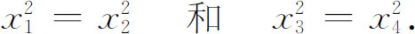
于是由最后这两件事实，我们能说，上面八个置换的前四个使R′中的关系（6）保持成立，但后四个则不行。于是这四个置换，如果它们使根之间的每个在R′中正确的关系保持不变，就是方程在R′中的群。这四个置换是八个置换的一个子群。
现设我们添加量
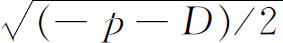
到R′中，这里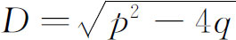
，并形成域R″，则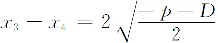
是R″中的一个关系。这个关系仅在头两个置换E和E1下保持不变，而在八个置换的其余置换下不这样。倘若根之间的每个在R″中的关系在这两个置换下都保持不变，则方程在R″中的群由这两个置换组成。这两个置换是那四个置换的一个子群。
设我们添加量
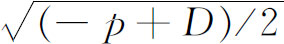
到R″中，又得到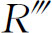
。在中我们有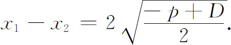
现在恰有E是使中全部关系保持正确的仅有的置换；因而这是方程在中的群。
从上面的讨论可以看到，方程的群是它的可解性的关键，因为这个群表示出根的不可区分的程度。它告诉我们，关于根有哪些东西我们还不知道。
存在许多群，或严格地说是一个置换群和依次包含如上的一些子群。现在一个群（或子群）的阶就是其中元素的个数。于是我们就有了阶为24，8，4，2，1的群。子群的阶总能整除母群的阶（第6节）。一个子群的指数是它所在的群的阶被子群的阶除所得的商。例如那个8阶子群的指数就是3。
上面的概要仅仅表明伽罗瓦所论述的思想。他的工作如下进行：给了一个一般的或特殊的方程，他首先说明如何能找到这个方程在系数域中的群G，即根的置换的群，而这些置换使根之间的系数在该域中的全部关系保持不变。当然我们必须在不知道根的情况下找到这个方程的群。在上面的例子中，四次方程的群是8阶的，而系数域是R。在找到了方程的群G后，下一步是找G的最大的子群H。在我们的例子中，这是一个四阶子群。假如有两个或多个最大子群，可任取一个。H的确定是纯粹群论的事，是能够做到的。找到H后，可以用一套仅含有理运算的手续来找到根的一个函数ø，它的系数属于R，并且在H的置换下，它不改变值，但在G的所有别的置换T下，就要改变值。在我们上面的例子中，这个函数是
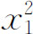
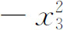
。实际上可得到无穷多个这样的函数。当然我们必须在不知道根的情况下找出这样一个函数。存在一种方法构造R中的一个方程，使它的一个根就是这个函数ø。这个方程的次数是H在G中的指数。这个方程称为一个部分预解式(12)。在我们的例子中，这方程是t2-（p2-4q）＝0，它的次数是8/4或2。接着必须能从这个部分预解式解出根ø。在我们的例子中，ø是
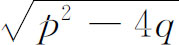
。添加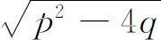
到R中，得到一个新的域R′。于是可以证明，原来方程关于域R′的群是H。我们现在重复这个步骤。在我们的例子中我们有群H，是四阶的，以及域R′。下一步找H的最大子群。在我们的例子中，它是2阶子群，称这个子群为K。现在能得到原方程的根的一个函数，它的系数属于R′，它的值在K的每个置换下不变，而在H的其他置换下要改变。在我们上面的例子中这方程是
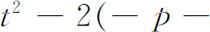
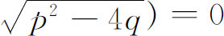
。这方程的次数是K关于H的指数，即4/2或2。这方程是第二个部分预解式。接着必须解出这个预解式方程，得到一个根，即函数ø1；把这个值添加到R′中，从而形成域R″。对于R″，方程的群是K。
再重复这个过程，找到K的最大子群L。在我们的例子中这恰是恒等置换E。我们找根的一个函数（系数在R″中），它在E下保持值不变，而在K的别的置换下改变它的值。在我们的例子中，这样一个函数是x1-x2。为了在不知道根的情况下得到这个ø2，我们必须构造R″中的一个方程，以函数ø2为一个根。在我们的例子中，这方程是
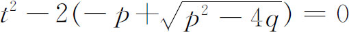
。这方程的次数是L关于K的指数，在我们的例子中是2/1或2。这方程是第三个部分预解式。我们必须解这个方程，以找到值ø2。在添加这个根到R″中以后，得到。假设我们已到了最后一步，这里，原方程在中的群是恒等置换E。
接着伽罗瓦证明了当一个方程关于给定域的群恰是E时，那么方程的各个根都是属于那个域。因此，根在域中。又因是由已知域R用逐次添加已知量得到的，我们就知道了根所在的这个域。其次有一个用中有理运算来直接找根的步骤。
伽罗瓦给出了一个方法来找给定方程的群，逐次的预解式以及方程关于逐次扩大了的系数域的群，即原来群的逐次的子群，而扩大的系数域是由添加这些逐次的预解式的根到原来的系数域而得到的。这些步骤包含了可观的理论，但正如伽罗瓦指出的，他的工作不打算成为解方程的一个实际方法。
接着伽罗瓦把上面的理论运用到以有理运算和根式解多项式方程的问题。这里他引进了群论的另一个概念。设H是G的一个子群，如果用G的任一元素g乘H的所有置换，则得到一个新的置换集合，用gH表示，这符号表示先实行置换g，然后再应用H的任一元素。如果对G中的每个g有gH＝Hg，则称H为G的一个正规子群（自共轭或不变）子群。
我们回忆伽罗瓦的解方程的方法需要找寻和求解逐次的预解式。伽罗瓦证明了当作为约化方程的群（比如说由G约化到H）的预解式是一个素数次p的二项方程xp＝A时，则H是G的一个正规子群（且有指数p）；反之，如H是G的一个正规子群，且具有素指数p，则相应的预解式是p次二项方程，或能化简到这样的方程。如所有的逐次预解式都是二项方程，则由高斯关于二项方程的结果，我们能用根式解原来的方程。因为我们知道，我们能从最初的域通过逐次添加根式的方法过渡到根所在的最后的域。反之，如果一个方程能用根式求解，则预解式方程组必定存在，而且它们都是二项方程。
如此，可用根式求解的理论与前面所给的求解理论在一般轮廓上是相同的；不同的只是在子群序列
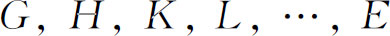
中，必须每一个都是前一个群的极大正规子群（不是任何较大的正规子群的子群）。这样的序列叫做合成序列。H对G的指数，K对H的指数，如此之类，叫做合成序列的指数。若这些指数都是素数，则这方程就能用根式求解，而若这些指数不是素数，则这方程就不能用根式求解。当我们找极大正规子群序列时，可能有选择；即在一个给定的群或子群中最高阶的极大正规子群可能多于一个，我仍可选任何一个，虽然由此而得的子群可能不同，但将产生完全相同的指数集合，虽然这些指数出现的次序可以不同（参看下面的若尔当-赫尔德定理）。包含一个素数指数的合成序列的群G称为可解的。
伽罗瓦理论是如何证明当n＞4时一般的n次方程不能用根式求解，而n≤4时又都能求解呢？对一般的n次方程，这个群由n个根的全部n！个置换组成。这个群称为n级对称群。它的阶当然是n！。对每个对称群，不难找到合成序列。这里极大正规子群（称为交错子群）具有阶n！/2。这个交错群仅有的正规子群是恒等元素。因此指数是2和n！/2。但对n＞4，数n！/2决不是素数。因此次数大于4的一般方程不能用根式求解。另一方面，二次方程可以借助单独一个预解式方程而解出。合成序列的指数恰由单个数2组成。一般的三次方程，为了求解，需要两个预解式方程，其形式为y2＝A和z3＝B。这些当然是二项预解式，合成序列的指数是2和3。一般的四次方程能够求解，因为它有四个二项预解式方程，一个三次的、三个二次的，因而合成序列的指数是2，3，2，2。
对于数字系数的方程，与带有独立的文字系数的方程不同，伽罗瓦给出了一个与上述相似的理论。然而，判定可用根式求解的手续更复杂，虽然基本原理是相同的。
伽罗瓦还证明了一些特殊的定理。如果有一个素数次的不可约方程，它的系数在一个域R中，它的根全部是其中两个根的带有R中系数的有理函数，则此方程可用根式求解。他还证明了逆定理：每个可用根式求解的素数次的不可约方程，具有性质，每个根都是其中两个根的带有R中系数的有理函数。这样的方程现在叫做伽罗瓦方程。伽罗瓦方程的最简单的例子是xp-A＝0。这个概念是阿贝尔方程的推广。
附带说一下，埃尔米特(13)和克罗内克在给埃尔米特的一封信(14)及后来的一篇文章(15)中，用椭圆模函数解出了一般的五次方程，这类似于用三角函数来解不可约的三次方程。